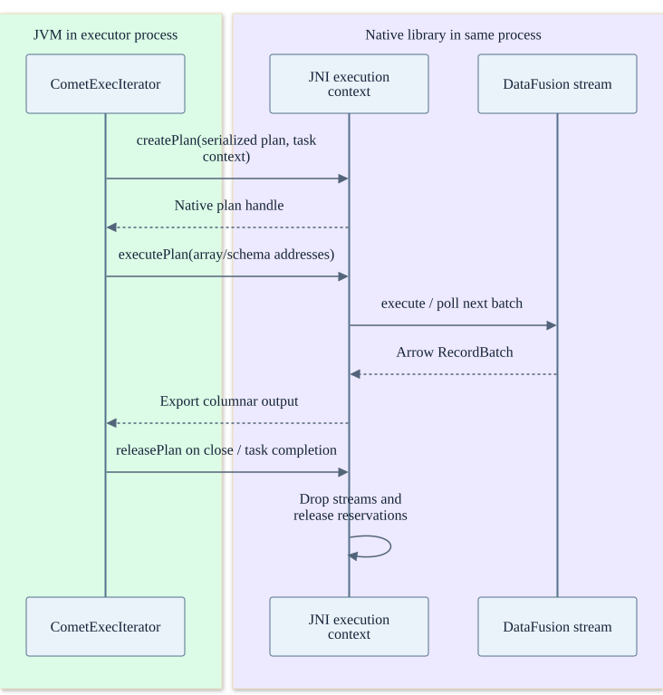

Chapter 14 · source-backed walkthrough
Comet: Spark tasks with native execution
Comet adds native execution to selected Spark plans. Spark retains distributed scheduling, task attempts and shuffle orchestration. The executor enters a native library through JNI, builds a DataFusion plan and exchanges Arrow-compatible columnar batches.
01
Driver rules and executor execution
CometSparkSessionExtensions injects rules at Spark extension points. Compatible operators and expressions are converted into native-capable plan segments; unsupported semantics or types can leave Spark execution and record fallback reasons. The physical plan must be inspected to know what actually ran natively.
CometExecIterator is instantiated for a Spark task. createPlan passes the serialized plan, inputs, native metrics, memory configuration, local disk directories, task attempt identity and other context into JNI. Native execution is inside the same executor process; this is not a remote call to a Comet server.
JNI executePlan drives the native plan and exports output arrays / schemas. The JVM side wraps results as ColumnarBatch. The query may alternate between native and Spark segments, so representation conversion and fallback boundaries are real costs.
Comet fits inside Spark execution
Scheduling RPC and remote shuffle remain Spark responsibilities. JNI is an in-process boundary.

02
The native batch and resource lifecycle
The first execution creates the native physical plan and obtains a stream. Subsequent executePlan calls drive the next batch. Arrow C data / stream representations permit sharing compatible memory across the ABI without serializing every value into a new Java object.
This is not a promise that the whole query is zero-copy. Parquet decoding, compression, selection, casting, dictionary handling, row / column conversion and shuffle encoding may allocate and copy. The exact boundary decides what can share buffers.
CometExecIterator.close releases current batches, input / shuffle resources and the native plan. The lifecycle tests cover creation failure, idempotent close, release after metrics failure and early-stopped native scans. Cleanup has to run even when an earlier cleanup step throws, or a task retry can leak native memory.
One executor task enters and exits native execution
No network RPC occurs between these JVM and Rust lanes. External file or shuffle I/O can occur within the native execution path.

03
Failure and performance tradeoffs
A recoverable native execution error is converted into an exception that Spark can treat as a task failure. A native crash or executor OOM can kill the entire executor, affecting unrelated tasks in that process. Spark then handles executor / shuffle loss. Rust memory safety helps prevent classes of bugs but does not turn native code into a durable service.
Fallback is generally a planning compatibility decision; it is not a universal mid-task mechanism that silently reruns any failing native operator in the JVM. An external sink still needs attempt-safe output commit when Spark retries.
Larger columnar batches amortize JNI and vector-operation overhead, but increase live memory and time before the next yield. Spill enables larger-than-memory work but adds disk I/O. Native CPU improvements matter most when compute is the bottleneck; object-store latency, a hot shuffle partition or destination commits can dominate the whole query.
Comet has its own Iceberg integration paths and the separate DataFusion-Iceberg project has its own adapter. They are not assumed to be the same implementation or a proven compatible set of HEAD versions. The guide records each checkout independently.
Where a native speedup can disappear
These are performance analysis categories, not measured benchmark results.

| Signal | Interpretation | What to inspect |
|---|---|---|
| Fast native CPU, unchanged wall time | Another stage or storage boundary dominates | Scan bytes, object-store waits, shuffle skew and sink commit time. |
| High RSS with low JVM heap | Native / Arrow / direct memory is consuming the container budget | Native reservations, off-heap settings, Arrow ownership and task concurrency. |
| Many row-column boundaries | Fallback fragments the batch pipeline | Physical plan and recorded fallback reasons. |
| Long tail tasks | Skew or spill can dominate p99 | Partition distribution, spilled bytes, I/O wait and task duration. |
Inside the implementation
These excerpts come directly from the code paths used above. Expand a component to move from the system view into its implementation.
comet-extension CometSparkSessionExtensions.scala:100
Spark extension rules select compatible native operators.
datafusion-comet/spark/src/main/scala/org/apache/comet/CometSparkSessionExtensions.scala · 1628c520096e
99 }
100 extensions.injectColumnar { session => CometColumnar(session) }
101 // Pre-3.5 only: tag AQE DPP regions so the conversion rules below leave them Spark-native.
102 // Registered before CometRule so tags are in place when conversion runs.
103 // No-op on Spark 3.5+; see CometSpark34AqeDppFallbackRule's class docstring.
104 injectPreSpark35QueryStagePrepRuleShim(extensions, CometSpark34AqeDppFallbackRule)
105 extensions.injectQueryStagePrepRule { session =>
106 CometRule(session, queryStagePrep = true)
107 }
108 injectQueryStageOptimizerRuleShim(extensions, CometPlanAdaptiveDynamicPruningFilters)
109 injectQueryStageOptimizerRuleShim(extensions, CometReuseSubquery)
110 extensions.injectPlannerStrategy { session => IcebergWriteStrategy(session) }
111 }
112
113 case class CometColumnar(session: SparkSession) extends ColumnarRule {comet-create CometExecIterator.scala:125
Native plan, memory, task identity and runtime inputs cross JNI.
datafusion-comet/spark/src/main/scala/org/apache/comet/CometExecIterator.scala · 1628c520096e
124
125 val createdPlan = nativeLib.createPlan(
126 id,
127 inputObjects,
128 protobufQueryPlan,
129 protobufSparkConfigs,
130 numParts,
131 nativeMetrics,
132 metricsUpdateInterval = COMET_METRICS_UPDATE_INTERVAL.get(),
133 cometTaskMemoryManager,
134 localDiskDirs,
135 batchSize = COMET_BATCH_SIZE.get(),
136 memoryConfig.offHeapMode,
137 memoryConfig.memoryPoolType,
138 memoryConfig.memoryLimit,Test source inspected or located, not executed: CometExecIteratorLifecycleSuite.scala
comet-jni jni_api.rs:1242
Native execution uses a DataFusion plan inside the Spark executor process.
datafusion-comet/native/core/src/execution/jni_api.rs · 1628c520096e
1241 // so we should always execute partition 0.
1242 let stream = root_op.native_plan.execute(0, task_ctx)?;
1243
1244 if exec_context.scans.is_empty() && exec_context.shuffle_scans.is_empty() {
1245 // No JVM data sources — spawn onto tokio so the executor
1246 // thread parks in blocking_recv instead of busy-polling.
1247 exec_context.batch_producer =
1248 Some(BatchProducer::spawn(&get_runtime(), stream));
1249 } else {
1250 exec_context.stream = Some(stream);
1251 }
1252 exec_context.root_op = Some(root_op);
1253 } else {
1254 // Pull input batches
1255 pull_input_batches(exec_context)?;comet-next CometExecIterator.scala:241
Output arrays return to the JVM as columnar batches.
datafusion-comet/spark/src/main/scala/org/apache/comet/CometExecIterator.scala · 1628c520096e
240 (arrayAddrs, schemaAddrs) => {
241 nativeLib.executePlan(ctx.stageId(), partitionIndex, plan, arrayAddrs, schemaAddrs)
242 })
243 })
244
245 if (tracingEnabled) {
246 traceMemoryUsage()
247 }
248
249 result
250 } catch {
251 // Handle CometQueryExecutionException with JSON payload first
252 case e: CometQueryExecutionException =>
253 logError(s"Native execution for task $taskAttemptId failed", e)
254 throw SparkErrorConverter.convertToSparkException(e, taskFilePaths)comet-close CometExecIterator.scala:312
Task lifecycle closes batches, iterators and the native plan.
datafusion-comet/spark/src/main/scala/org/apache/comet/CometExecIterator.scala · 1628c520096e
311
312 def close(): Unit = synchronized {
313 if (!closed) {
314 closed = true
315
316 // Attempt every resource's cleanup independently, so that one failure does not skip the
317 // remaining resources: this close() is the only chance to release them, since `closed` is
318 // already set and the task-completion retry is a no-op. The first failure is rethrown with
319 // any later ones attached as suppressed exceptions.
320 var failure: Throwable = null
321 def attempt(cleanup: => Unit): Unit = {
322 try {
323 cleanup
324 } catch {
325 case t: Throwable =>